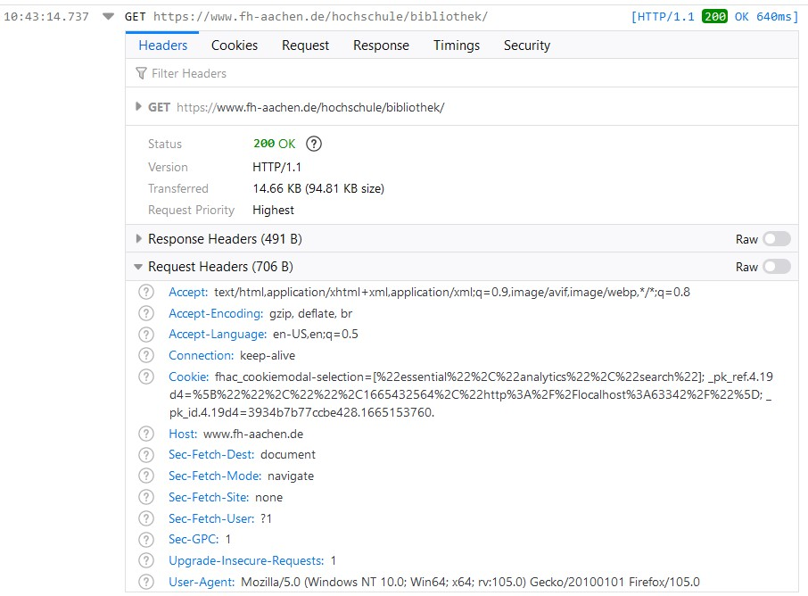

Aufgab 6 (1a)

Der Header in Anfrage hat verschiedene Attributen zB.
- User-Agent: welche App hat diese Anfrage geschickt
- Version HTTP/1.1 : version der HTTP-Protokol der in diesen verbindung benutzt wird
- Connection: keep-alive : sagt der Server, dass der Verbindung nach diese packet nicht unterbreschen soll
- Host: www.fh-aachen.de: der Host-Domain muss benannt werden weil es kann sein ,das unter eine Server-IP-Adresse
verschiedene Webseiten gehostet